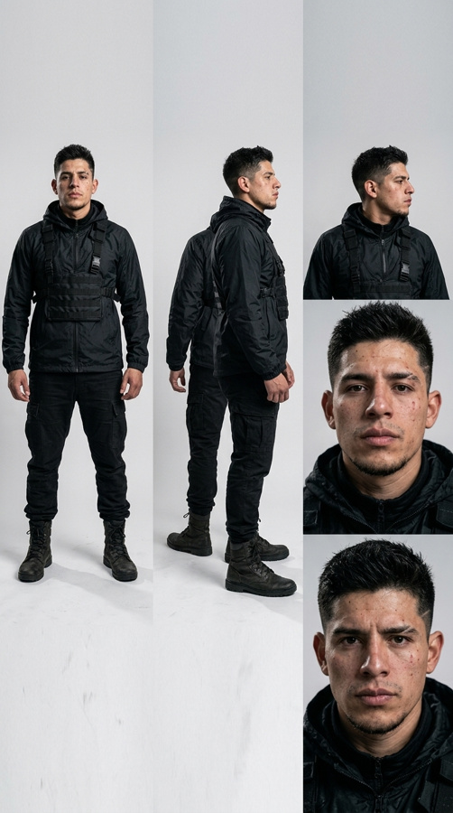
Por toma: guarda la imagen, súbela en Flow como fotograma inicial, toca «Copiar prompt», pégalo y genera.
Flow → Caracteres → nuevo: nombre, ficha, voz y pega la descripción.

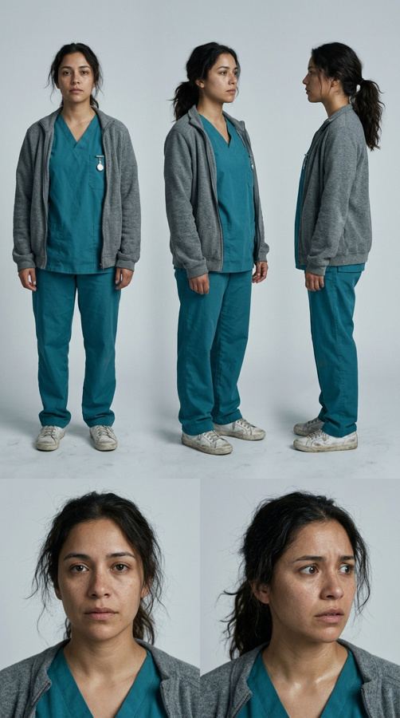
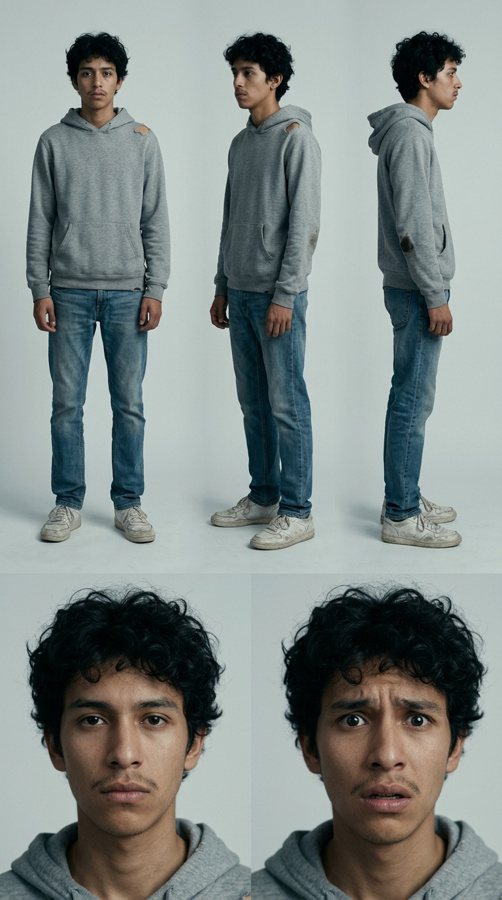
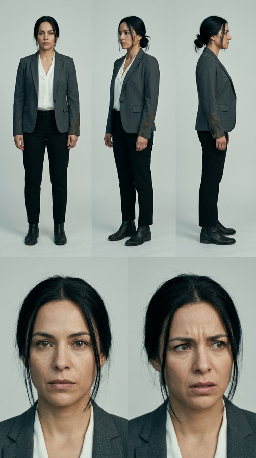
9 tomas · ~1:14 · Piloto · producir primero
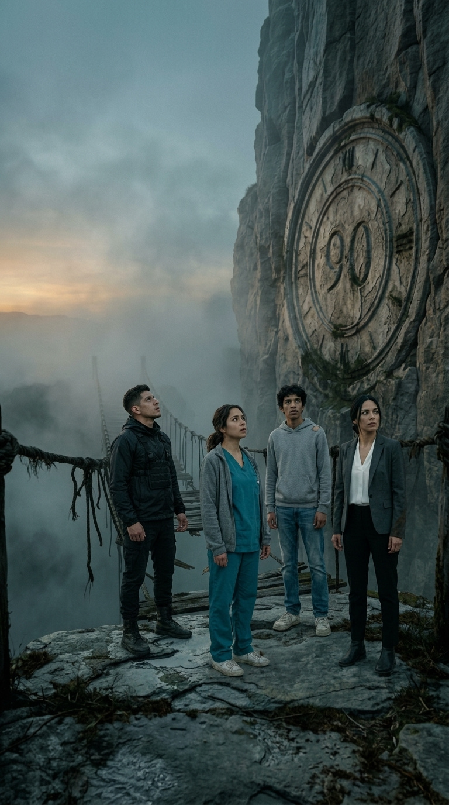
Mantén presionada la imagen para guardarla. En Flow súbela como fotograma inicial.
Voz en off: "Cuatro jugadores. Un puente. Solo dos llegan al otro lado."
SVP_E01_S01_v01.mp4
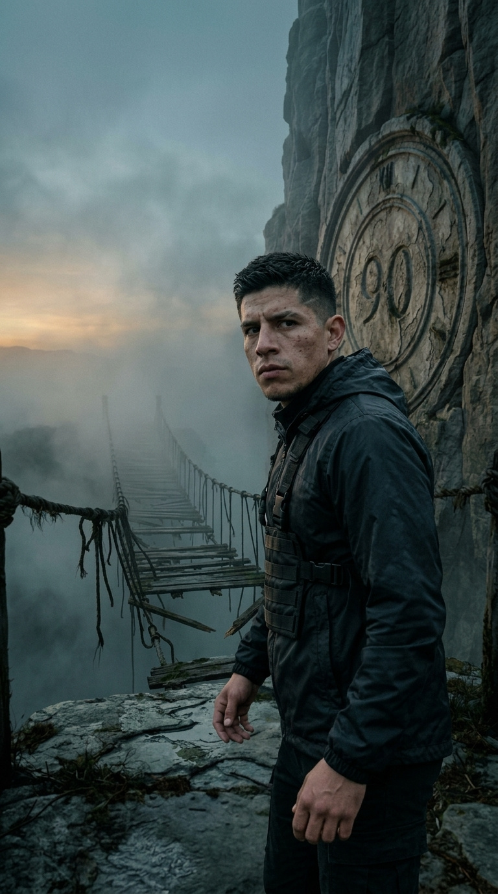
Mantén presionada la imagen para guardarla. En Flow súbela como fotograma inicial.
Javier: "¿Solo dos? Eso es mentira. Ese puente aguanta."
SVP_E01_S02_v01.mp4
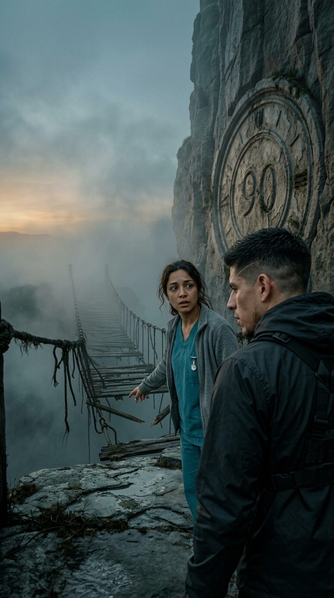
Mantén presionada la imagen para guardarla. En Flow súbela como fotograma inicial.
Lucía: "Mira las tablas, Javier. Falta la mitad."
SVP_E01_S03_v01.mp4
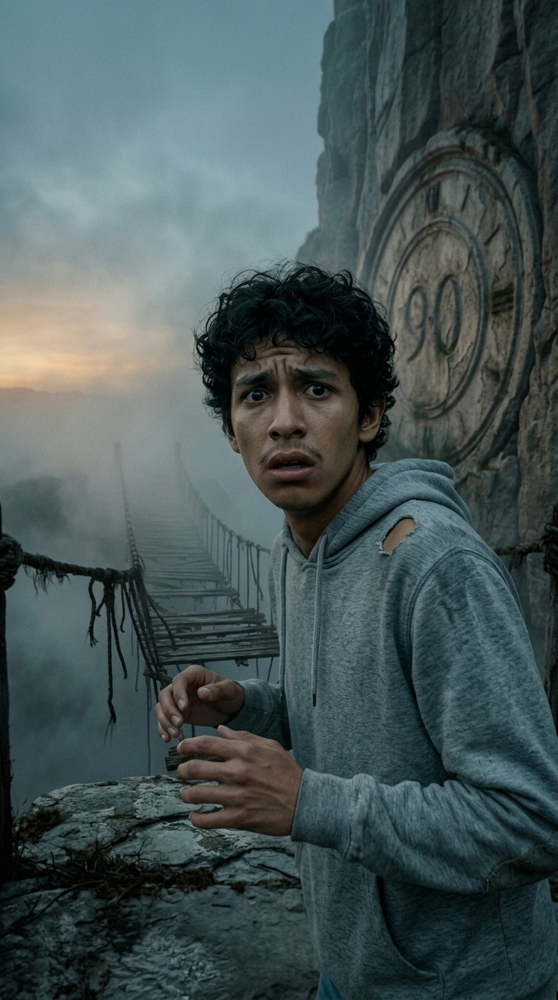
Mantén presionada la imagen para guardarla. En Flow súbela como fotograma inicial.
Andrés: "Yo no puedo cruzar eso… no puedo."
SVP_E01_S04_v01.mp4
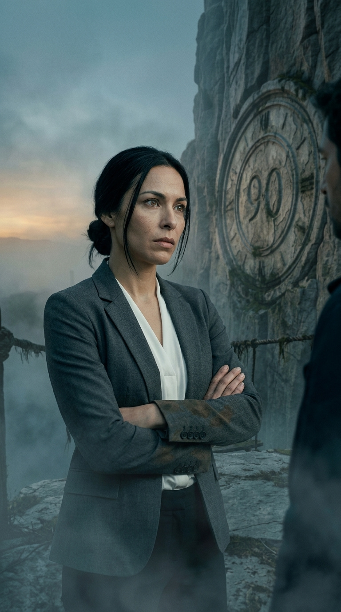
Mantén presionada la imagen para guardarla. En Flow súbela como fotograma inicial.
Valeria: "Entonces quédate. Así sobra un lugar."
SVP_E01_S05_v01.mp4
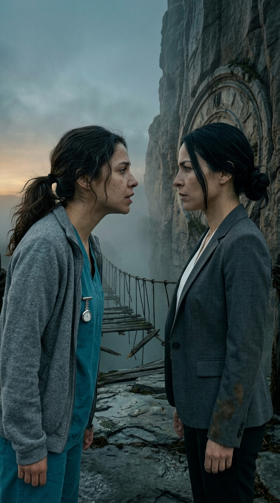
Mantén presionada la imagen para guardarla. En Flow súbela como fotograma inicial.
Lucía: "¿Así vas a ganar? ¿Dejando a un niño atrás?"
SVP_E01_S06_v01.mp4
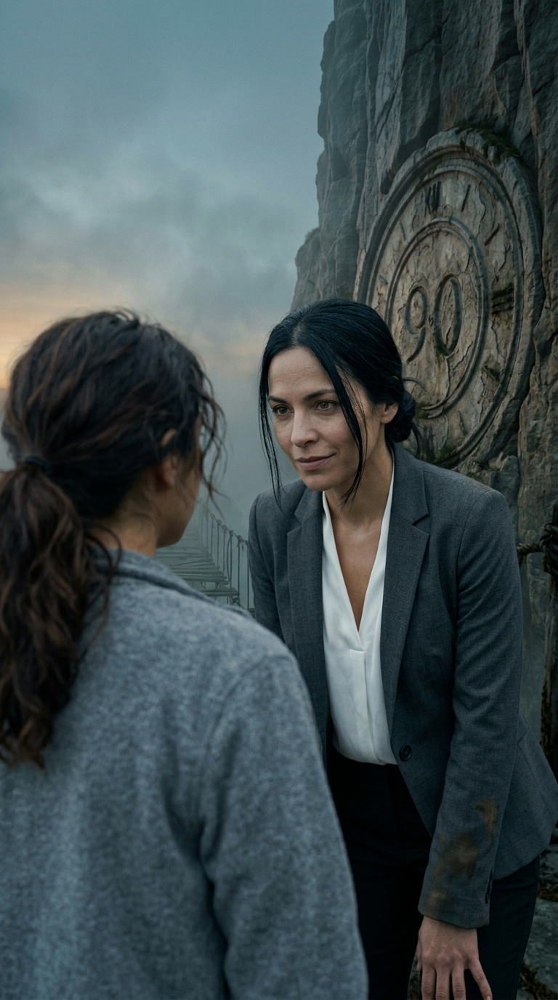
Mantén presionada la imagen para guardarla. En Flow súbela como fotograma inicial.
Valeria: "Así se sale vivo de aquí."
SVP_E01_S07_v01.mp4
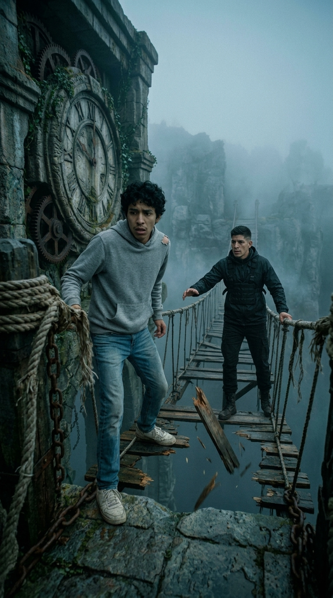
Mantén presionada la imagen para guardarla. En Flow súbela como fotograma inicial.
Javier: "¡Andrés, dame la mano! ¡Ahora!"
SVP_E01_S08_v01.mp4
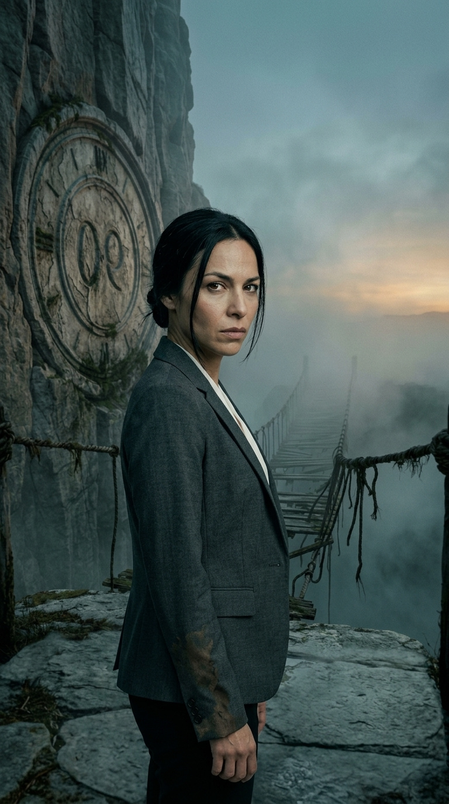
Mantén presionada la imagen para guardarla. En Flow súbela como fotograma inicial.
Valeria: "Tú también me dejarías atrás… ¿o no? Comenta quién cruza. Síguenos para el capítulo uno."
SVP_E01_S09_v01.mp4